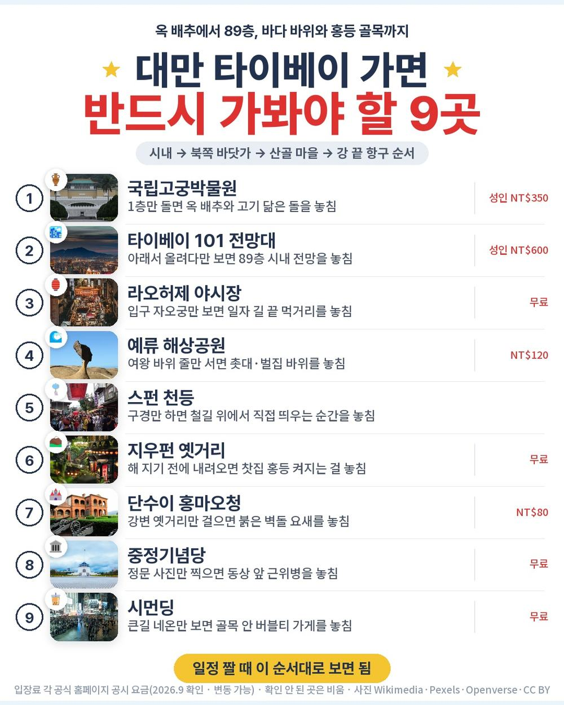
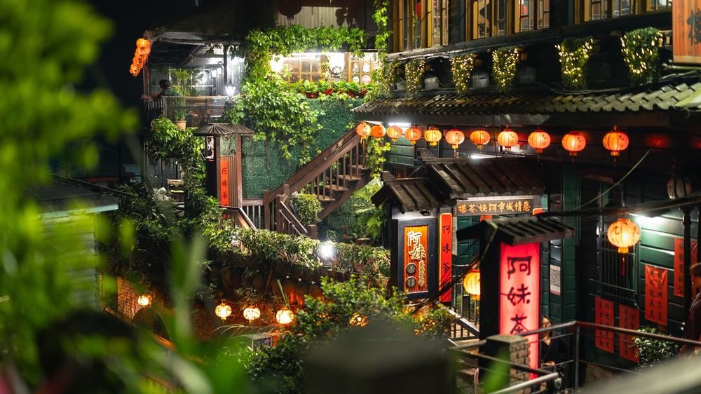
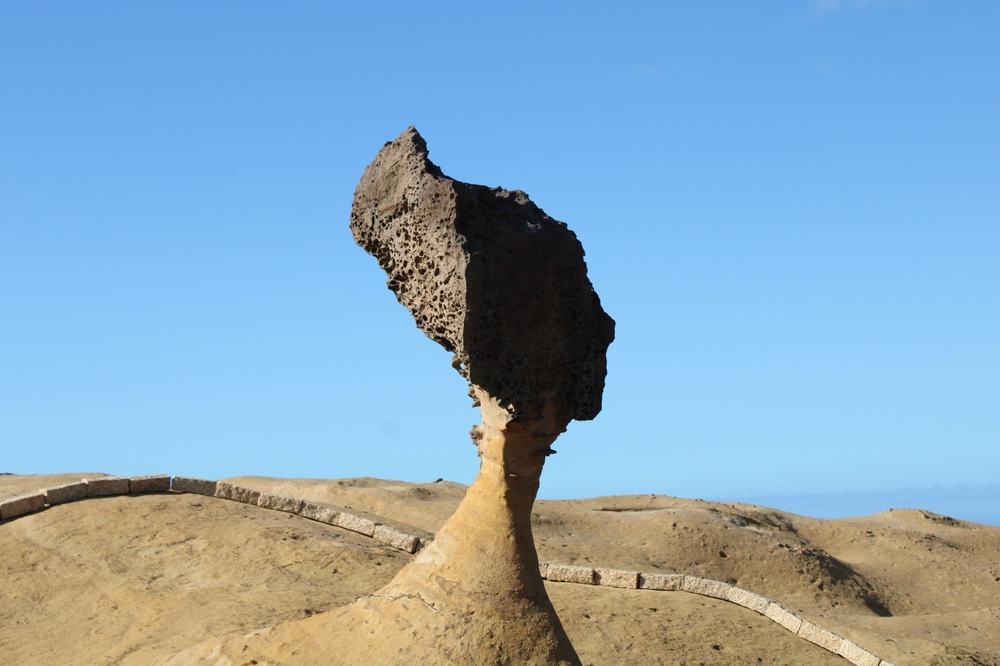

타이베이 패키지 노쇼핑 참좋은여행 패키지 여행 89만 9천원, 도착 첫날 고궁박물관과 101 전망대까지 도는 3박 4일
오전 10시 40분 인천 출발, 점심 무렵 타오위안 도착이라 첫날 오후에 국립고궁박물관과 101빌딩 89층 전망대를 다 넣은 노쇼핑 일정. 101 전망대와 시먼딩 관광이 옵션이 아니라 상품가 안에 들어 있다는 점이 눈에 띔.
직접 다녀온 후기가 아니라, 참좋은여행 일정표와 포함·불포함 원문을 하나씩 따져 본 글임.
결론 — 추천. 쇼핑센터 없이 고궁박물관·101·예류·스펀 천등·지우펀·단수이·중정기념당·시먼딩까지 사흘 안에 돌고, 식사 9회와 망고빙수·버블티가 붙음. 다만 호텔이 시내 한복판이어야 하는 분은 맞지 않음.
오늘 기준 출발일별 요금 보기
https://naver.me/56XKXtv6

| 항목 | 내용 |
|---|---|
| 가격 | 1인 899,000원 (성인 · 11월 출발 기준) · 2인 1,798,000원 |
| 여행사 | 참좋은여행 |
| 항공 | 제주항공 직항 · 인천 10:40 → 타오위안 12:35 / 타오위안 13:35 → 인천 17:00 · 기내식 없음 |
| 숙소 | 시외 준특급 3박 (주도 플라자 호텔 예정 · 같은 급 변경 가능 · 출발 2일 전 문자 확정 · 2인 1실) |
| 일정 | 3박 4일 · 버스 · 한국어 가이드 · 식사 9회 · 쇼핑 0회 · 선택관광 마사지 1종 · 최소 10명 |
▶ 내 출발일 오늘 기준 요금 확인 (제휴 링크 · 예약 시 수수료를 받으며 가격은 같습니다)
▶ 10월 22일 기준 타이베이 패키지 최저 59만 9천원부터 — 출발일별 값 한 화면에: 비교 페이지
같은 일정을 진에어로 가는 상품은 1인 79만 9천원 (10월 22일 기준 · 출발일마다 다름). 비행 시간대를 같이 보고 고르면 됨.
| 번호 | 내용 | 한 줄 답 |
|---|---|---|
| 1 | 이 값에 들어 있는 것 | 101 전망대·천등까지 |
| 2 | 현장에서 더 낼 돈 | 1인 40달러 |
| 3 | 일정과 체력 | 버스 약 7.5시간, 2일차가 긺 |
| 4 | 자유여행으로 짜면 | 1인 약 91만원 |
| 5 | 맞는 분 · 안 맞는 분 | 첫날부터 보고 싶은 분 |
1. 이 값에 들어 있는 것

89만 9천원 안에 든 걸 세어 보면 이렇다.
- 제주항공 인천–타오위안 직항 왕복, 유류할증료·세금 포함
- 시외 준특급 호텔 3박 (2인 1실), 아침 세 번은 호텔 조식
- 식사 9회 — 딤섬, 우육면, 대만식 샤브샤브, 한식 불고기가 이름까지 적혀 있음
관광은 첫날 오후부터 셋째 날 밤까지 이어짐.
- 국립고궁박물관 · 101빌딩 89층 전망대 · 자오궁 · 라오허제 야시장
- 예류 해상공원 · 스펀 천등(4인 1개) · 지우펀 옛거리
- 단수이(홍마오청·진리대학·옛거리) · 중정기념당 · 시먼딩 자유 약 1시간, 망고빙수(2인 1개)와 버블티(1인 1잔)
- 최고 1억원 해외여행자보험
쇼핑센터 방문이 0회. 101 전망대는 옵션으로 사면 35달러, 시먼딩 관광은 20달러 상당이라고 원문이 밝혀 둔 항목인데 둘 다 값 안에 있음. 선택관광은 셋째 날 밤 마사지 하나뿐이고, 안 하면 1~2시간 자유시간이 됨.

호텔은 세 밤 내내 같은 곳. 주도 플라자 호텔이 예정이고 하이원홀리데이·오차드파크 같은 곳으로 바뀔 수 있음. 위치가 시외라 저녁에 따로 시내 구경을 나가려면 교통편을 직접 잡아야 함. 대만은 겨울철 호텔 난방이 약한 편이라 도톰한 잠옷을 하나 넣어 가면 좋고, 칫솔·치약도 챙겨야 함.
2. 현장에서 더 낼 돈
| 항목 | 금액 | 비고 |
|---|---|---|
| 가이드·기사 경비 | 80달러 (약 11만원) | 1인 40달러 · 성인·아동 같음 · 현지에서 냄 |
| 선택관광 마사지 | 0원 ~ 100달러 | 발 30분 30달러 · 전신 60분 50달러 · 안 해도 불이익 없음 |
| 4일차 점심 | 각자 | 공항에서 해결 |
| 싱글룸 | 210,000원 | 혼자 방을 쓸 때만 |
| 합계 (2인) | 약 11만원 (반드시 내는 돈) | 상품가 179만 8천원 + 경비 = 약 190만 8천원 |
두 사람 상품가 179만 8천원에 경비까지 치면 약 190만 8천원. 한 사람당 95만원 남짓으로 보면 됨.
3. 일정과 체력

| 일차 | 가는 곳 | 버스 | 걷기 | 점심 · 저녁 |
|---|---|---|---|---|
| DAY 1 | 07:30 인천 1터미널 미팅 → 10:40 출발 → 12:35 타오위안 → 국립고궁박물관 → 101빌딩 전망대 → 자오궁 → 라오허제 야시장 | 약 2시간 | 보통 | 현지식 · 현지식 |
| DAY 2 | 예류 해상공원 → 스펀 천등 → 지우펀 옛거리 | 약 3시간 | 중상 | 현지식 · 한식 |
| DAY 3 | 단수이(홍마오청·진리대학·옛거리) → 중정기념당 → 시먼딩 자유 약 1시간 → 마사지(선택) 또는 자유 | 약 1.5시간 | 보통 | 현지식 · 현지식 |
| DAY 4 | 호텔 조식 → 공항 → 13:35 출발 → 17:00 인천 | 약 1시간 | 적음 | 없음 |
버스는 나흘 동안 약 7.5시간. 가장 오래 타는 날은 둘째 날인데, 시내에서 북쪽 바닷가 예류로 갔다가 스펀과 지우펀을 거쳐 돌아오는 동선이라 그럼. 지우펀은 계단 골목이 길게 이어져서 걷기도 이날이 제일 많음.
첫날은 아침 7시 30분에 공항에서 모여 밤 야시장까지 이어지는 긴 하루. 타오위안 공항에서 시내까지 차로 35~45분이라 도착하자마자 고궁박물관으로 바로 감. 기내식이 없는 항공이라 출국 전에 공항에서 아침을 먹어 두는 게 편함. 계단이 있는 지우펀에서는 무릎이 불편하신 분은 가이드에게 미리 말해 두면 좋음.
4. 자유여행으로 짜면

| 항목 | 금액 | 근거 |
|---|---|---|
| 인천–타이베이 왕복 항공 | 509,400원 | ICN↔TPE 직항 왕복 1인 50만 9천원 (패키지와 같은 출발일 운임 · 2026-10-22 마이리얼트립 조회) |
| 준특급 호텔 3박 | 150,000원 | 2인 1실 1인분 (추정) |
| 입장료 | 52,000원 | 101 전망대 NT$600 · 예류 NT$120 · 고궁 NT$350 · 홍마오청 NT$80 (공식 공시 요금 환산 추정) |
| 예류·스펀·지우펀 차량 | 80,000원 | 하루 택시 투어 2인 나눔 (추정) |
| 식사 (점심 3 · 저녁 3) | 90,000원 | 현지식 기준 (추정) |
| 공항 이동 | 15,000원 | 타오위안 공항철도 왕복 (추정) |
| 여행자보험 · 유심 | 15,000원 | 4일 기준 (추정) |
| 가이드 | — | 자유여행은 없음 |
| 합계 | 약 911,400원 |
혼자 짜면 1인 약 91만원. 패키지는 89만 9천원에 경비 40달러를 더해 약 95만원이라, 패키지가 4만원쯤 더 듦. 그 차이에 한국어 가이드와 사흘 내내 움직이는 차량이 들어 있는 셈.
돈보다 큰 차이는 둘째 날. 예류·스펀·지우펀은 서로 떨어져 있어서 대중교통으로 하루에 묶기가 빠듯함. 패키지는 아침에 호텔 앞에서 출발해 세 곳을 한 번에 돌고 저녁 식당까지 데려다줌.
5. 맞는 분 · 안 맞는 분
| 맞는 분 | 안 맞는 분 |
|---|---|
| 쇼핑센터 없이 타이베이 핵심만 보고 싶은 분 | 호텔이 시내 한복판이어야 하는 분 |
| 첫날 오후부터 고궁박물관·101을 보고 싶은 분 | 기내식이 꼭 있어야 하는 분 |
| 예류·천등·지우펀·단수이까지 넣고 싶은 분 | 같은 일정을 한 푼이라도 싸게 가려는 분 |
자주 묻는 질문
Q. 대만 패키지 가이드 경비는 따로 내나요?
A. 냄. 1인 40달러이고 성인·아동 같음. 현지에서 미국 달러로 내니, 경비용 달러와 쓸 돈 대만달러를 나눠 환전해 가면 편함.
Q. 대만 패키지 쇼핑 옵션은 몇 번 있나요?
A. 쇼핑센터 방문은 0회. 옵션은 셋째 날 밤 마사지 하나로, 고르지 않으면 그 시간이 자유시간이 됨.
Q. 대만 패키지 선택관광 마사지는 얼마예요?
A. 발마사지 30분 30달러, 전신 마사지 60분 50달러. 성인·아동 같은 값이고, 참여하지 않아도 추가 비용이나 일정상 불이익은 없음.
마무리
오전에 떠나 첫날부터 고궁박물관과 101을 보고, 둘째 날 바닷가와 산골 마을, 셋째 날 단수이와 시먼딩까지 쇼핑 없이 꽉 채운 3박 4일. 시외 호텔만 괜찮다면 대만이 처음인 부모님과 가기 좋은 구성임.
출발일마다 값이 달라서, 가시려는 달 요금부터 보는 게 먼저.
오늘 기준 출발일별 요금 보기
https://naver.me/56XKXtv6
이 글에는 네이버 제휴 링크가 포함되어 있으며, 링크를 통해 예약하시면 일정 수수료를 받습니다. 가격은 동일합니다. 가격과 구성은 2026년 10월 22일 확인 기준이며 출발일에 따라 달라질 수 있습니다.
▶ 이 상품, 영상으로 보기 (유튜브)
▶ 타이베이 패키지 오늘 값 나란히 비교
▶ 같은 목적지 다른 여행사 패키지, 쇼핑·선택관광·가이드 경비까지 비교: pkg-lab.com
사진 출처 (저작자 · 라이선스):
그 밖의 사진: Pexels
쇼츠·클립 영상과 사진:
【DJI Spark】九份的空拍!九フンを空から見てみた!千と千尋の神隠しの舞台!#213 — Shigeki Nakayama (YouTube, CC BY) 원본
TW 台灣 Taiwan 新台北 New Taipei 平溪區 Pingxi District 十分老街 風景區 Shi — CC BY-SA 4.0 (Wikimedia Commons) 원본

New Taipei - Shifen Old Street 十分老街 (2025) - IMG 06 — CC BY 4.0 (Wikimedia Commons) 원본
_-_IMG_06.jpg){kind=link}
Foreigners Try STINKY TOFU for the FIRST Time in T — Food and Footprints- Greg and Jumi (YouTube, CC BY) 원본